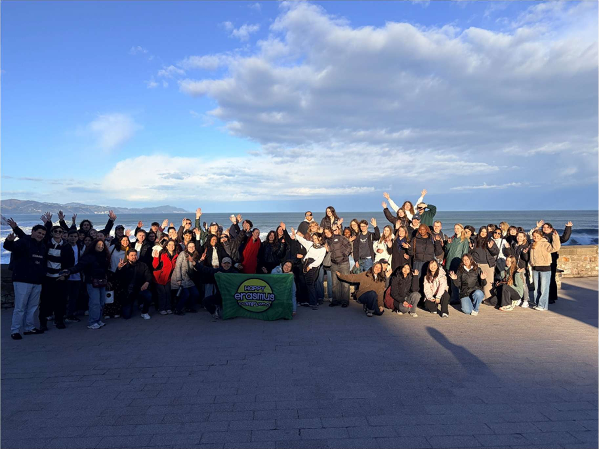
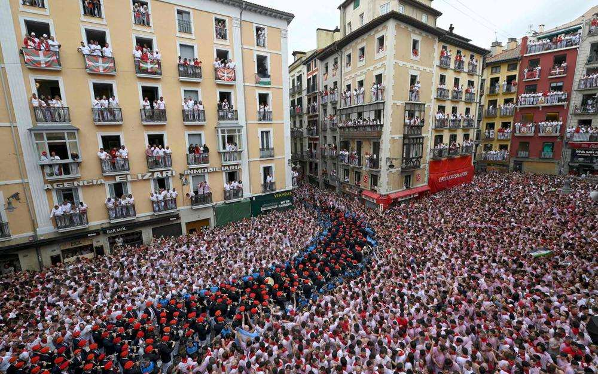

Quatre mois comme Social Media Content Creator & Graphic Designer chez Happy Erasmus Pamplona (janvier – mai 2026) : création de contenu, gestion des réseaux sociaux et accueil des étudiants internationaux, au sein d'une petite structure au rythme soutenu.
Happy Erasmus Pamplona (HEP) accompagne l'intégration des étudiants internationaux arrivant à Pampelune, entre soirées hebdomadaires, voyages du week-end et services pratiques (logement, carte de réductions). Une petite équipe (deux cofondateurs, une manager et trois stagiaires par semestre) pour une audience qui se renouvelle intégralement tous les six mois : peu de procédures écrites, des consignes souvent données à l'oral, et une vraie exigence d'autonomie.
Mon rôle couvrait l'ensemble de la production visuelle de l'association sur Canva (affiches, bannières, templates de stories) et la gestion complète du compte Instagram : planification éditoriale, publication, suivi des performances. J'ai aussi assuré la captation photo et vidéo lors des soirées et des voyages, montée sur CapCut, ainsi que l'accueil des étudiants au bureau, une dimension humaine du poste que j'ai trouvée particulièrement gratifiante.
Sur les quatre mois, le compte est passé d'environ 2 300 à plus de 2 900 abonnés (+25 %), porté notamment par les Reels, le format qui générait systématiquement le plus d'engagement.
Lors du dernier voyage du semestre, la responsable censée encadrer le groupe s'est trompée de date et le bus est arrivé avec une heure de retard. Avec mon collègue stagiaire italien, nous nous sommes retrouvés seuls pour prendre en charge une cinquantaine d'étudiants, sans itinéraire détaillé ni dossier logistique complet. La journée a été longue et exigeante, mais nous avons tenu le groupe informé, géré les imprévus au fur et à mesure, et ramené tout le monde avec une bonne expérience. C'est, avec le recul, l'un des moments qui m'a le plus appris sur ma capacité à garder mon sang-froid et à prendre des décisions sans validation immédiate.
Ce stage n'était pas mon premier choix au départ : je cherchais initialement une expérience en finance à l'international. Mais il m'a apporté, par contraste, une vraie certitude : ce qui me stimule le plus n'est pas la production de contenu en elle-même, aussi gratifiante soit-elle, mais les moments d'analyse, comprendre les mécaniques économiques de l'association, ses arbitrages entre mission sociale et viabilité commerciale. Cette expérience a confirmé mon choix de spécialisation en Finance et Contrôle de gestion pour la suite de mes études.
Sur le plan personnel, ce séjour a été différent de mes précédentes expériences à l'étranger, aux États-Unis puis à Prague : entouré d'étudiants venus de dizaines de pays, j'ai particulièrement apprécié la convivialité de la culture latino, très présente à Pampelune. Je garde un attachement sincère à cette ville et à son rythme : les paseos du soir, les bars à pintxos, l'effervescence avant les fêtes de San Fermín.

